1點網址列右側的「安裝」圖示
用 Chrome 打開網址後，網址列右邊會出現一個「螢幕加箭頭」的小圖示，點它。
若沒看到圖示：點右上角「⋮」→「投放、儲存和分享」→「安裝網頁應用程式…」。
把電子表板安裝到電腦或平板，像 App 一樣從桌面直接開啟，全螢幕、無網址列。
適用於接待中心電腦、大電視接的電腦。建議使用 Chrome。
用 Chrome 打開網址後，網址列右邊會出現一個「螢幕加箭頭」的小圖示，點它。
若沒看到圖示：點右上角「⋮」→「投放、儲存和分享」→「安裝網頁應用程式…」。
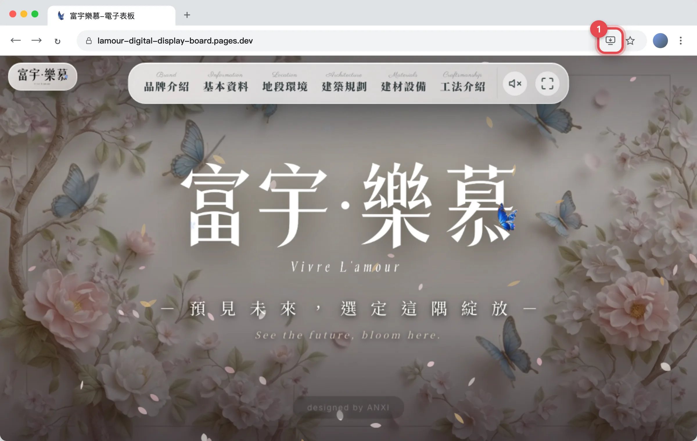
會跳出「安裝應用程式」小視窗，確認名稱是富宇樂慕 LAMOUR，按「安裝」。
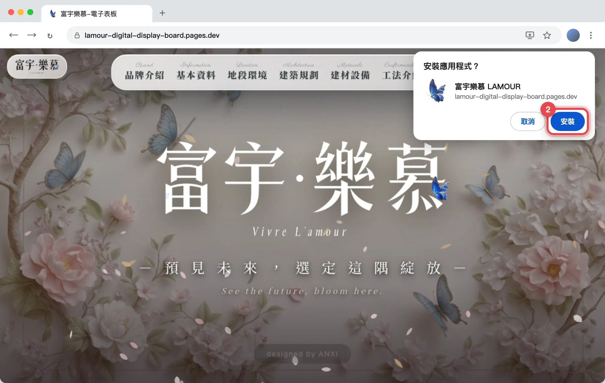
應用程式會立刻以獨立視窗開啟；桌面與「開始」功能表（Mac 為「啟動台」）會出現「富宇樂慕」圖示，之後直接點圖示開啟即可。
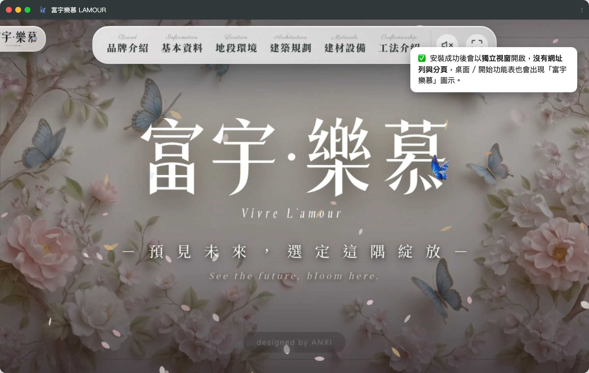
Windows 內建的 Edge 也可以安裝，步驟與 Chrome 幾乎相同。
用 Edge 打開網址後，網址列右邊會出現一個「方格加號」的圖示，點它。
若沒看到圖示：點右上角「⋯」→「應用程式」→「將此網站安裝為應用程式」。
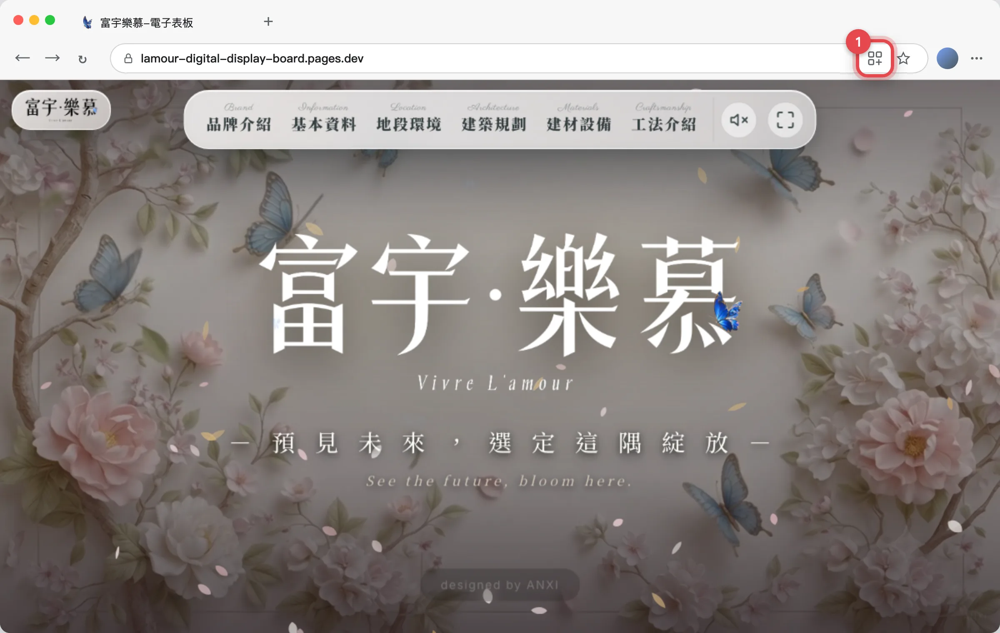
確認名稱是富宇樂慕 LAMOUR，按「安裝」。之後若詢問是否釘選到工作列 / 桌面，勾選後按「允許」。
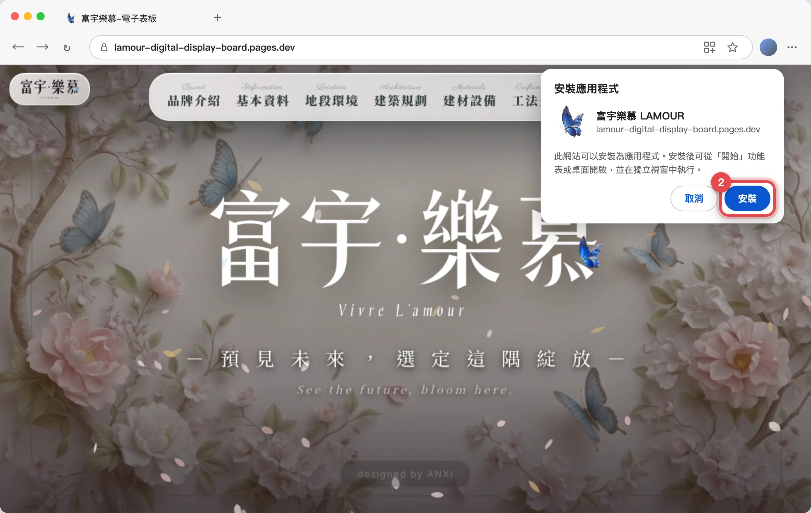
應用程式以獨立視窗開啟，桌面與「開始」功能表會出現「富宇樂慕」圖示。
iPad、iPhone 必須用 Safari（不能用 Chrome）。iPad 的「分享」按鈕在右上角，iPhone 在底部中間。
用 Safari 打開網址，點「分享」圖示（一個方框加向上箭頭）。iPhone 在螢幕底部中間，iPad 在右上角網址列旁。
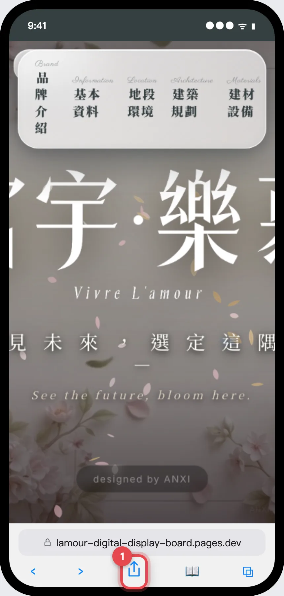
選單往下滑，找到「加入主畫面」並點選。
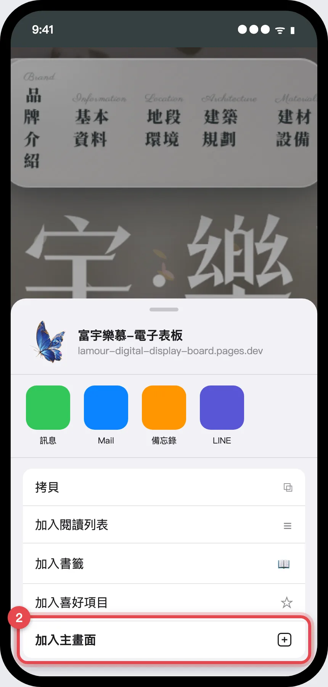
名稱保持「富宇樂慕」，按右上角「新增」。主畫面就會出現「富宇樂慕」圖示，點開即全螢幕。
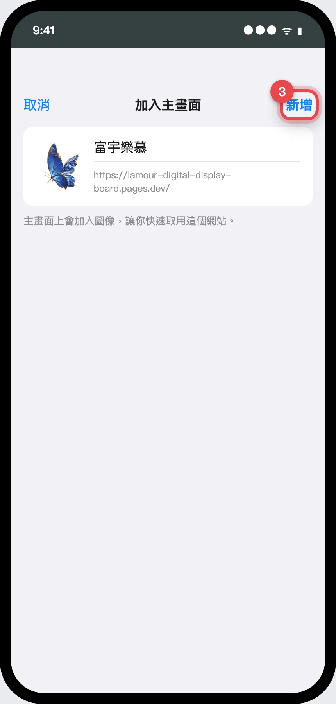
用 Chrome 打開網址。部分裝置打開後會直接在底部跳出「安裝」提示，直接按「安裝」即可。
用 Chrome 打開網址，點右上角的「⋮」選單。
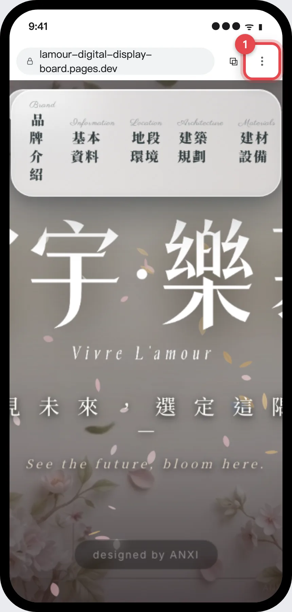
在選單中找到「安裝應用程式」（部分版本顯示為「加入主畫面」）並點選。
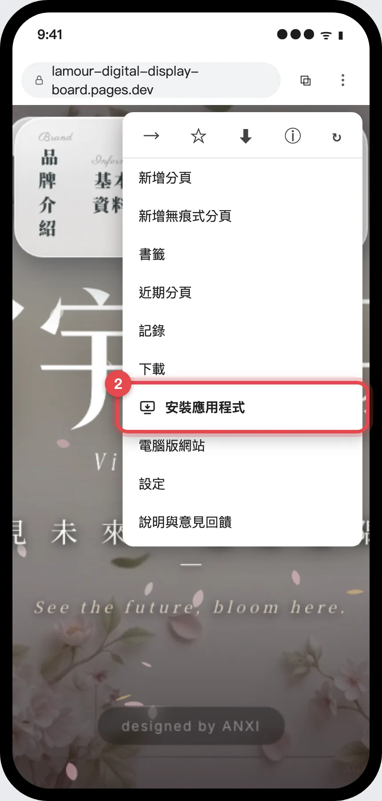
確認名稱是富宇樂慕 LAMOUR，按「安裝」。主畫面與應用程式列表會出現「富宇樂慕」圖示。
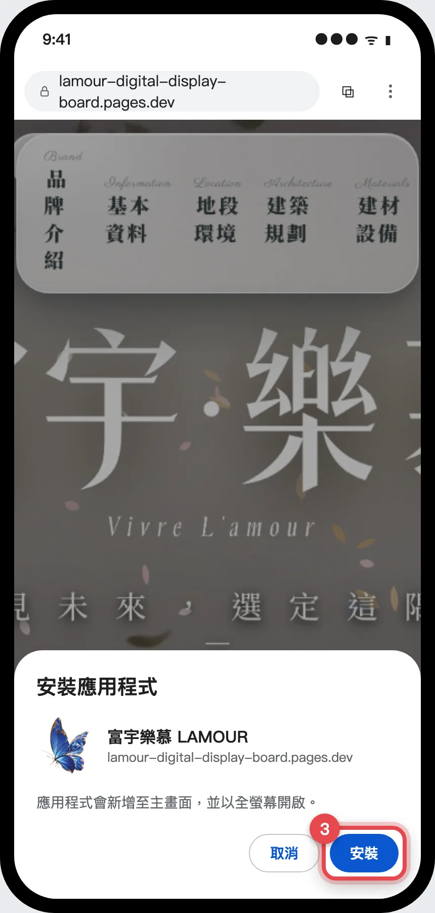
① 確認網址是 lamour-digital-display-board.pages.dev（不是舊的 github.io）。② 確認用的是 Chrome、Edge 或 Safari（iPad / iPhone 只能用 Safari）。③ 若之前已安裝過，圖示不會再出現，直接從桌面開啟即可。
舊版可以移除（Windows：開始功能表右鍵 → 解除安裝；iPad：長按圖示 → 移除 App），再依上面步驟用新網址重新安裝。兩者並存也不影響。
關閉應用程式再重新開啟即可。網站更新後 1–2 分鐘內會自動生效；圖片類更新最多需要 1 天。
Windows：把「富宇樂慕」捷徑放進「啟動」資料夾（Win + R 輸入 shell:startup）。開啟後按鍵盤 F11 或畫面上的全螢幕按鈕。